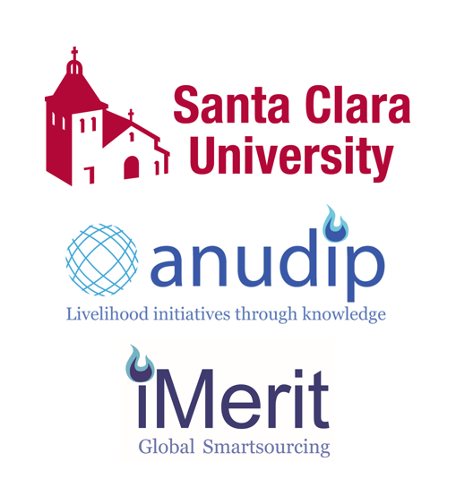
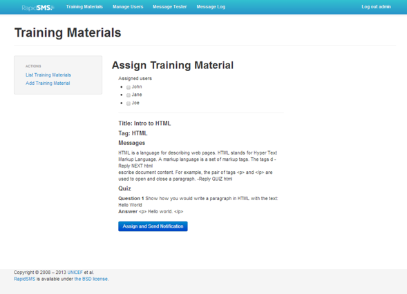
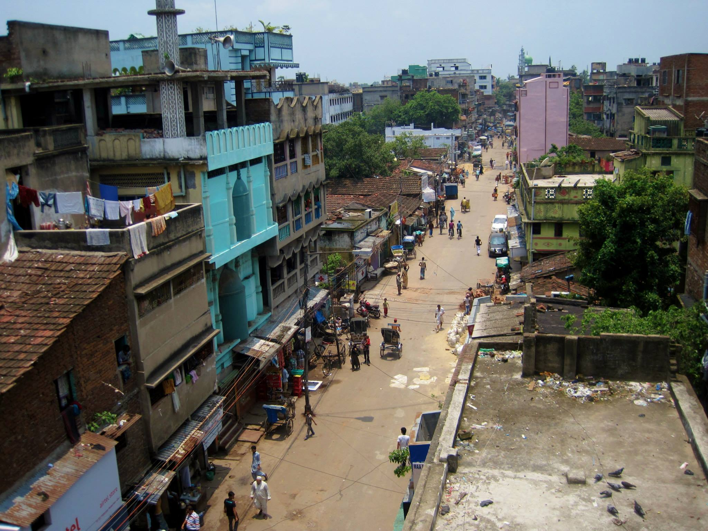

Melissa Bica
Education
Ph.D. first year student, University of Colorado Boulder
Computer Science – Human-Centered Computing area
B.S., Santa Clara University, June 2014
Computer Science and Engineering
Graduated cum laude (GPA: 3.67)
Study abroad, University of Edinburgh, Fall 2012
School of Informatics
Skills
Name | Experience |
|---|---|
| Programming in Python, C, Java | 5 years |
| Experience with HTML, CSS, Git, and LaTeX | 3 years |
| Windows, Linux, UNIX | 5 years |
Work Experiences
University of Colorado Boulder | Boulder, CO | August 2014 - present
Teaching Assistant
Teaching Assistant
- Teaching two recitation sections and creating assignments for CSCI 1300: Intro to Programming in Python and Java.
- Conducting grading interviews with about 50 students weekly for programming assignments.
Santa Clara University, Anudip, iMerit | Santa Clara, CA | February - December 2013
Global Social Benefit Fellow
Global Social Benefit Fellow
- Conducted research for social enterprises Anudip and iMerit as part of this 9 month, academic action research fellowship including 7 weeks of field work in Kolkata, India.
- Developed curriculum and instructed women in HTML and CSS in a semi-rural iMerit center in Metiabruz.

Qualcomm Inc. | San Diego, CA | June - August 2012
Interim Engineering Intern
Interim Engineering Intern
- Developed automated Android system and graphics performance benchmark tests using Perl and Java.
- Improved efficiency by reducing time needed to perform tests and analyze results.
Honors
Honor/Award | Date |
|---|---|
| Graduate Student Research Community Development Award CU Boulder Department of Computer Science | October 2014 |
| Dean’s Fellowship CU Boulder Department of Computer Science | AY 2014 – 2015 |
| Dean’s List Santa Clara University | AY 2013 – 2014 |
| Senior Design Presentation Session Award Santa Clara University | May 2014 |
| IEEE Women in Engineering International Leadership Conference Scholarship IEEE Santa Clara Valley Section | April 2014 |
| Upsilon Pi Epsilon Computing and Information Honor Society Santa Clara University | April 2014 |
| Willem P. Roelandts and Maria Constantino-Roelandts Grant Center for Science, Technology, and Society | November 2013 |
| Tau Beta Pi Engineering Honor Society Santa Clara University | October 2013 |
| Grace Hopper Celebration of Women in Computing Scholarship NSF | July 2013 |
| Global Social Benefit Fellowship Santa Clara University | February 2013 |
| Cisco-SCU Engineering Fellowship Santa Clara University | May 2012 |
| Richard Tapia Celebration of Diversity in Computing Scholarship ACM | April 2011 |
Portfolio
Text to Learn - Senior Design Project
- Digital training tool developed for social enterprises in emerging markets.
- Uses a web-based dashboard for trainers to send training materials via SMS to trainees’ mobile phones.
- Won Best in Session at SCU’s annual Senior Engineering Design Conference.

Bridging the Information Gap
- Collaborated with a team of eleven students to develop a mobile application for Community Technology Alliance to aid local homeless people in finding services local to them, including food, shelter, jobs, and health services.
- Designed user interface using HTML and CSS to be compatible with feature phones.
Travel
Edinburgh, Scotland
I studied abroad at the University of Edinburgh for the fall semester in 2012. I studied in the School of Informatics and took courses on Algorithms & Data Structures and Logic Programming, as well as Sociology and East Asian Civilizations.
Kolkata, India

In the summer of 2013, I traveled to Kolkata, India for the Global Social Benefit Fellowship. I primarily worked in an IT training office in the semi-rural town of Metiabruz, pictured here.
Hobby
Name | Experience |
|---|---|
| baking | 9 years |
| dancing | 5 years |
References
Leysia Palen
University of Colorado Boulder
Advisor
Silvia Figueira
Santa Clara University
Former professor and advisor
Radha Basu
iMerit and Santa Clara University
Former advisor for GSBF and CEO of iMerit